It has been called many names: Sentosa Aquarium, Southeast Asia Aquarium and Singapore Aquarium. However, the actual way to say it is "Sea Aquarium".
The S.E.A Aquarium first opened in November 2012 and currently holds the title of the world's 3rd largest and most stunning aquarium, which contains over 12 million gallons of water. It has the world's largest viewing panel, spanning 36-metre (118 ft) wide and 8.3-metre (27 ft) tall, which aims to give visitors the experience of being on the ocean floor.
It has over 100,000 marine animals of over 1,000 species, living across 49 different habitats. It has 10 different zones in the aquarium which replicates different ocean habitats that various marine animals used to live in.
At the S.E.A. Aquarium, you will get to see the man-eating sharks, coral reefs, and other exotic marine animals such as the Giant Crab, Hammerhead Shark, Reef Manta Ray and Giant Moray Eel. It is a rare sight and a marine experience not to be missed!
Must-Visit Attractions
Confused about how to explore this place? Scared that you might lose your way and get eaten by sharks? Here is a guide for you!
As shown in the above map and video, it is actually quite easy to navigate around as it is a one-way loop! This means that you would get the chance to explore everything on display! However, it won't hurt to plan ahead and know what to look out for so that you can better appreciate the trip!
Hence, I will share with you the visiting order of the different attractions and my inputs on each!
1. Shipwreck Habitat
This is the first exhibit you will encounter. It displays how shipwrecks can develop over time into flourishing marine habitats full of sponges and corals. You can view this view via the flat viewing panel or walkthrough tunnel.
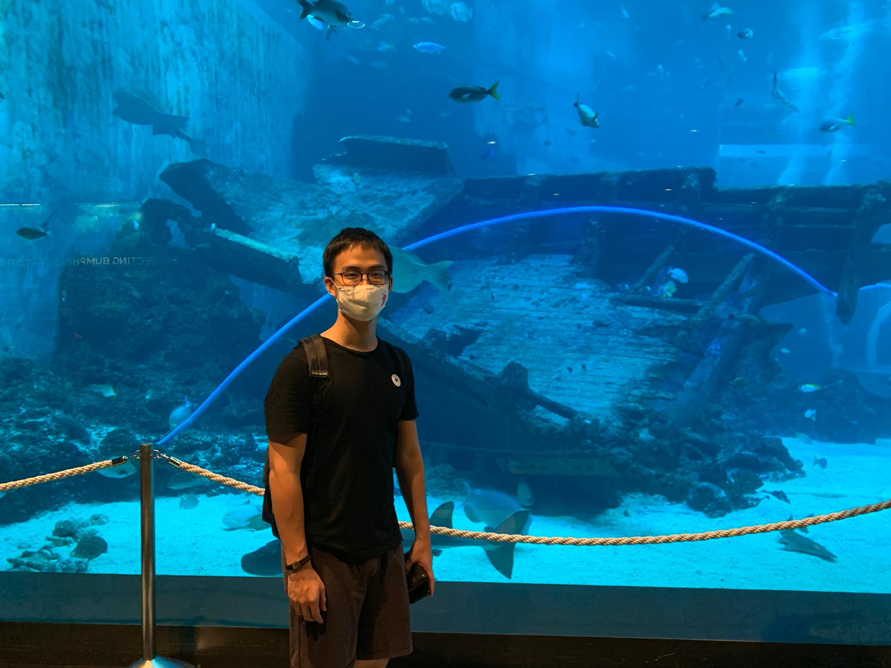
Watch out for:
The critically endangered bowmouth guitarfish which is hard to breed as little is known about them.
Vanda the miracle baby (Watch the video to find out more).
2. Shark Seas Habitat
As you move along, you can enjoy the view of alpha predators of the ocean without being eaten. This exhibit consists of more than 70 sharks from 12 different species. Sharks are commonly misunderstood due to the negative portrayal in news and even films(e.g Jaws). You will learn more about their importance in maintaining the ocean ecosystem.
As you move along, you will get to enjoy the view of the alpha predators of the ocean. Fear not, you will not get eaten!
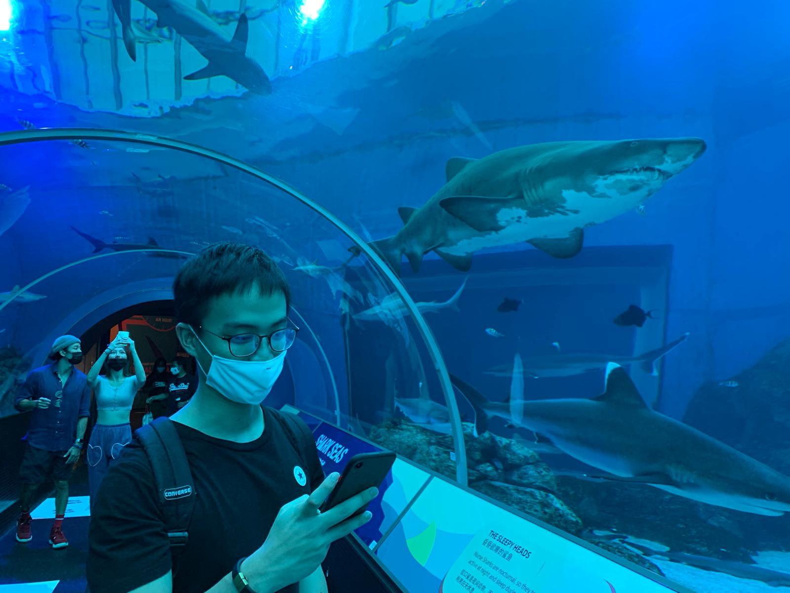
Watch out for:
The Sand Tiger Shark with protruding teeth. Looking at its eyes will explain immediately why they are the apex predators of the seas. (You can see in the two pictures above and below)
The endangered Scalloped HammerHead Shark that has 360- degree vision.
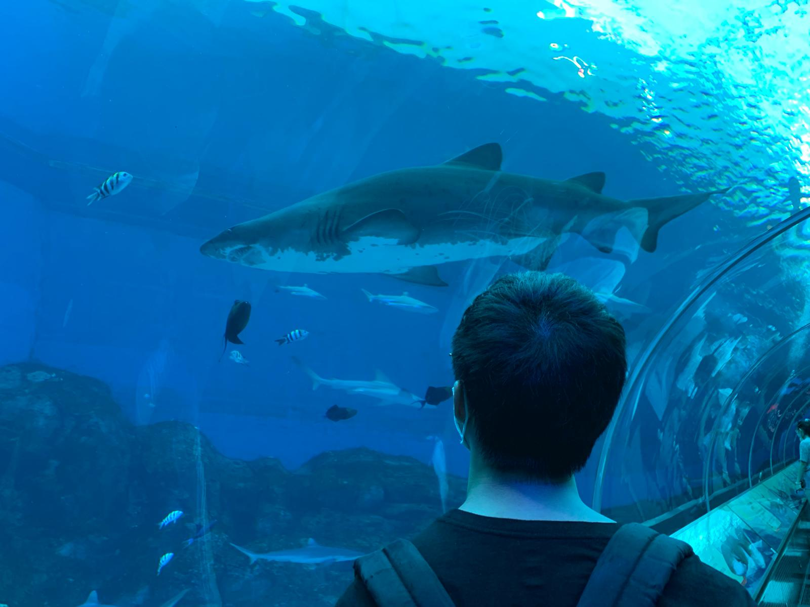
Me safely enjoying the view of the Sand Tiger Shark.
3. Coral Garden
Despite its name, there are no corals in it. This is a cylindrical habitat that is 8m tall and 6m in diameter. It displays a vibrant multicoloured reef world housing 5000 fishes from more than 100 species. The corals look real but they are actually artificial! This is because reef-eating fishes will destroy the corals if placed inside the habitat? Then are there live corals in the visit? Read on to find out more!
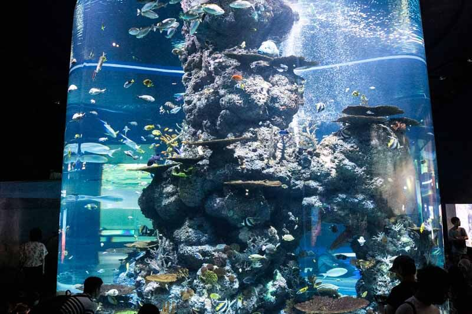
There are also other reef habitats nearby which display moving colours of the ocean. To me, it felt like a rainbow coming to life that seemed really natural which is pleasing for the eyes.
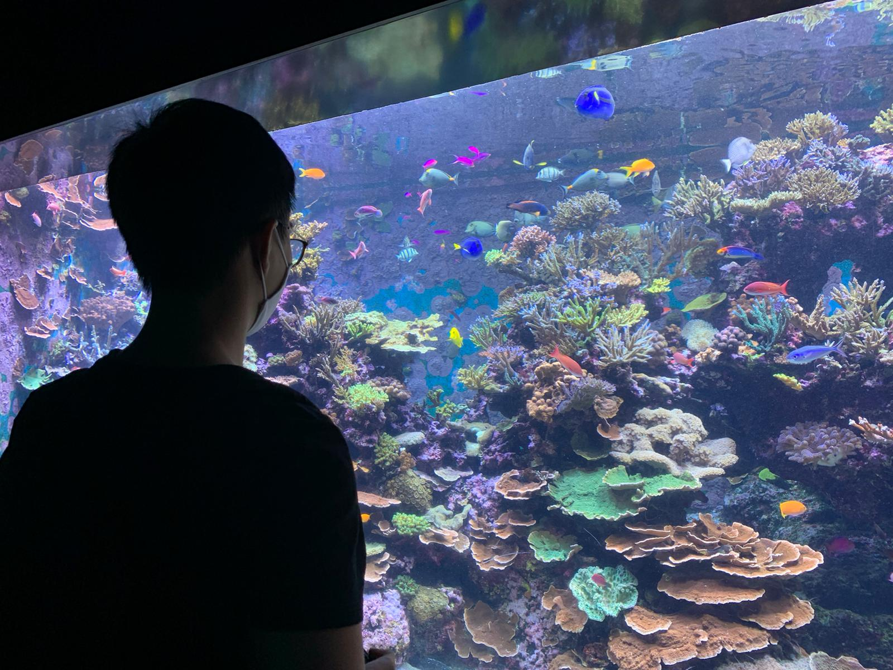
Watch out for:
The Napoleon Wrasse. It is important to the coral reef ecosystem as its consumes crown-of-thorn starfishes which damages the coral reefs.
If you have watched the movie “Finding Nemo”, you can try to look out for Dory, Nemo and his best friends.
Personally, I enjoyed staring at the sea anemones and different coloured fishes in the tank. I was totally absorbed by its beauty, you can try it too!
4. Open Ocean Gallery
This habitat is the S.E.A. Aquarium's masterpiece. It is the size of 7 Olympic Swimming Pools (18 million litres of water) and is home to 120 species of animals. Interestingly, it is certified as a full open water dive site due to its size, volume and water motions. Dive lessons are currently suspended due to COVID. However, once it reopens, you may consider getting certified here!
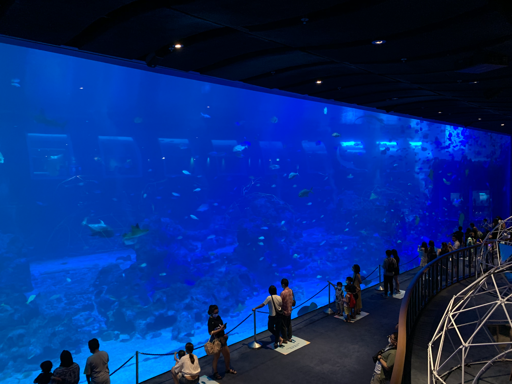
Watch out for:
The three manta rays, the mascots of the S.E.A Aquarium!
Mika has a black stripe on his underside and is fond of somersaulting underwater during feeding time.
Mako is the largest manta ray with an almost fully black body and charismatic presence.
Manja is the smallest and has a heart-shaped mark on his underside. He likes swimming around the aquarists during feeding time.
Looking at the white spotted sea jelly and thinking how similar it is to egg whites.
It is one of the most beautiful places in the aquarium. The exhibits are enhanced by special lighting which accentuate the hydrodynamics in the sea jellies. It is a fascinating gelatinous-like animal made up of 95 percent water and has no brains, bones, blood, fins or teeth. So far there are only 6 species that are successfully bred in the aquarium. I personally think that the moon sea jelly and white spotted sea jelly are the nicest among all.
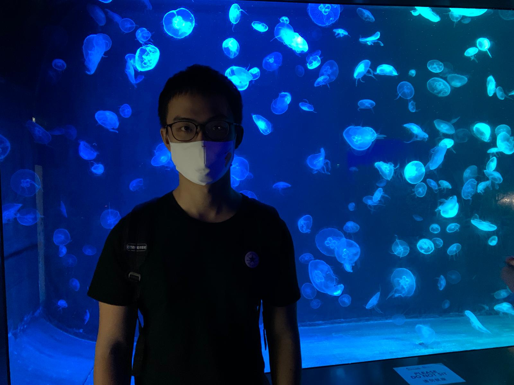
Watch out for:
Moon sea jelly which is the most beautiful one if I had to compare with the white spotted sea jelly. Let me show you a snippet of my view.
While enjoying the view, it reminded me of Doraemon's favourite snack (Dorayaki).
6. Freshwater Native Species Have a look at some freshwater species. They are not as visually appealing as compared to the saltwater species but there are interesting characteristics and abilities that they possess to survive in their environment.
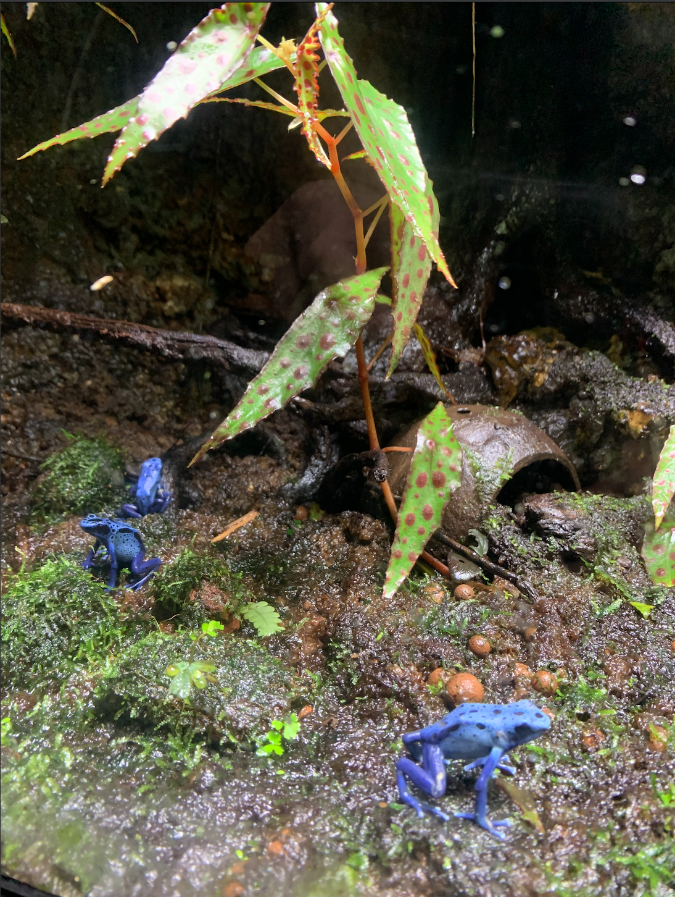
Watch out for:
The paddlefish and alligator gars which have survived since the dino age and have remained about the same from hundred million years ago. Also, look out for the colourful poison arrow frogs and the new Rainforest Habitat!
7. Live Coral Collection
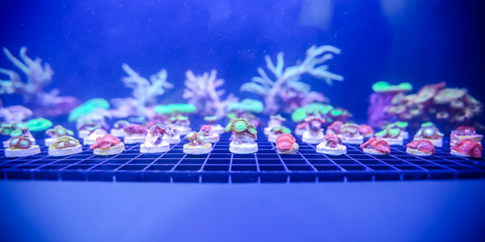
(Source: RWS Sentosa)
Here comes the million dollar question you have all been waiting for! - Are there live corals? The answer is YES! In fact, S.E.A. Aquarium has one of the largest live coral displays globally but just that it is not in the Coral Garden(despite its name)!There is a segment which shows the culturing of corals using a process called fragging.
To find out more, click here!
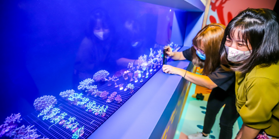
(Source: RWS Sentosa)
Things to Note
1. Advice on what to Expect and Prepare
I would recommend taking 2-3 hours to explore all sections of S.E.A Aquarium sufficiently.
There are interactive learning panels on the side which explains more details of the species you are viewing. Do check them out to enhance your learning and enjoyment.
Wear light clothing and a comfortable pair of shoes as you will be walking and standing most of the time.
There are designated sitting areas so feel free to use them if visiting with seniors or children.
Try not to bring anything too heavy to the S.E.A Aquarium. If you really need a locker, the nearest place is at The Forum B1.
If you are visiting with infants, I highly recommend small strollers as there is a lot of walking and strollers are not available for rent inside the aquarium.
Take note that all shows, public feeding sessions and character meet-and-greet are currently unavailable till further notice. To know more, click here.
2. Photography Tips
Want to take nice pictures but do not know how? Well I can guide you along with some short photography tips to up your photo game!
a. Use different colour display (For Sea Jellies Gallery)
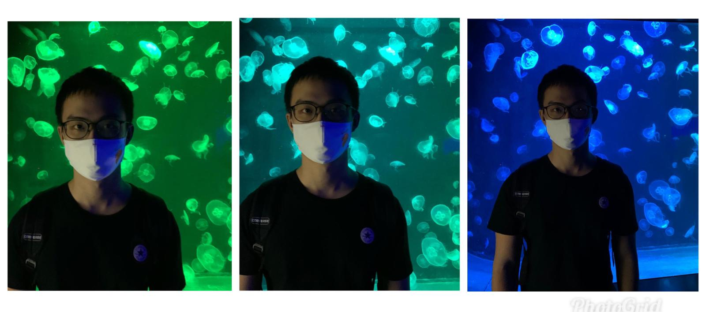
Different coloured background of the Sea Jellies Gallery creates a different vibe for each photo. If you are not photo savvy like me, take yourself with all the colours and pick the nicest one out of all!
b. Take photos of yourself looking gently at the animal eyes
Look at the animal like how you will look at your wife, and have a relaxed pose! *Do not take photos with a flash (Light will reflect off the glass and it creates stress towards the animals)
c. Try a back or side shot with silhouette
It works most of the time especially in dark areas whereby there is no point taking a frontal shot since it is pretty dark.
d. Smile with your mask on!
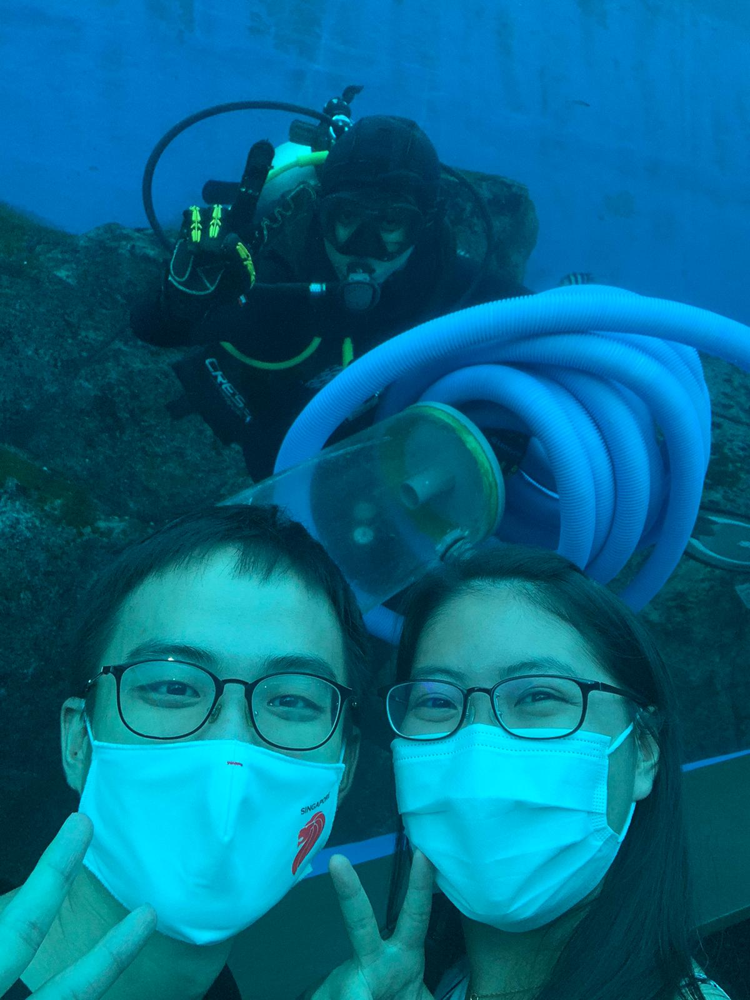
Despite the mask which covers your mouth, you can smile through your eyes! Also, it is a rare chance but if you spot a diver, you can take a photo with them. They are very friendly and spontaneous and would even take a photo with you!
3. Shopping and Dining
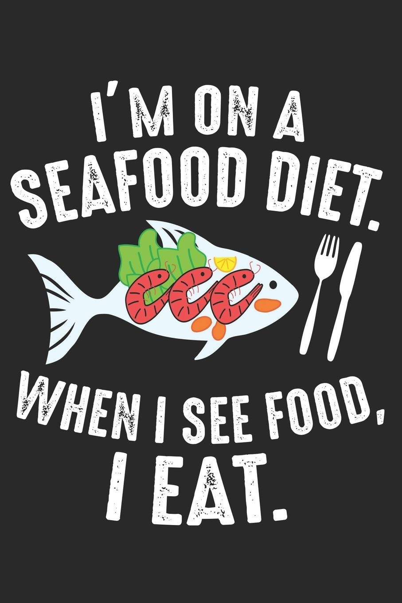
After a long walk and seeing so many exotic animals, you might be hungry and start thinking about Unagi Don, Sashimi, Sambal Stingray and other seafood delicacies. There are some places that you can visit!
FOOD & BEVERAGES
OCEAN Restaurant
It is Southeast Asia's only underwater dining experience. While eating, it offers a view of marine animals swimming such as giant manta rays and sharks. Take note that eating here requires a smart casual. Click here to know more.
S.E.A.side Snacks
It offers quick bites such as hotdogs, pastries and beverages.
Ocean Bites
It is located near the Open Ocean Gallery. It sells cakes, muffins, corn dogs and other snacks. Cotton Candy is extremely popular there
*Personally, I found the food in there a bit expensive. If you are like me, there are more affordable food places near the S.E.A. Aquarium and Universal Studios Singapore Rotating Globe(e.g Mcdonals, Texas Chicken).
Refer to this link to find out about the different price range and cuisine restaurants available!
For souvenirs, you can purchase from these shops within the S.E.A Aquarium!
SOUVENIR STORES
SEAA Treasures
They sell push toys, t-shirts, water bottles and many others.
SEAA Wonders
It is a souvenir shop that sells about the same items as SEAA Treasures. The difference is that it’s merchandise is eco-friendly.
Visitor Information and Booking
Address
8 Sentosa Island, Singapore 098269
Opening Hours
10 a.m. - 7p.m daily
Telephone
6577 8888
Email
enquiries@rwsentosa.com
Nearest MRT
HarbourFront (NE1/CC29), Walk towards Exit E to VivoCity
1. Mode of Transports
On foot (Recommended): If you are cost-savvy and looking to save cost, I recommend walking there via the Sentosa Boardwalk on VivoCity Level 1. (It’s a beautiful sight not to be missed!)
By train: Board the Sentosa Express at Level 3 of VivoCity. Alight at the first stop, Waterfront station, for Resorts World Sentosa.
By bus: At bus stop 14141 at VivoCity or 14121 at Merrill Lynch (HarbourFront), board bus RW8 and alight at the Resorts World Sentosa.
By car: Enter the Sentosa Gateway and go down Ramp A. Park in either the red or blue zone at the B1 East Car Park.
Need help with navigating? Use the interative map below!
Free and Unlimited entry for a year. Click here to find out more about the membership!
Author’s Personal Advice (Wang Teng Tian): You can enter for free using the $100 SingapoRediscover Vouchers which expires on 30 June 2021. (Eligibility Criteria: Singaporeans aged 18 and above in 2020). Click here to see how I did it!
Just a note for families, for Adult tickets($35), it is fully subsidised. For Child tickets($23), there is only a $10 subsidy.
If the above does not apply to you, click here to book!
Puny End of Website
I hope that you island so much information about the S.E.A Aquarium. You have been such a jawsome and fintastic audience. Oh whale, we have come to the end of this article.I hope that my article has been kelp-ful in serving you!
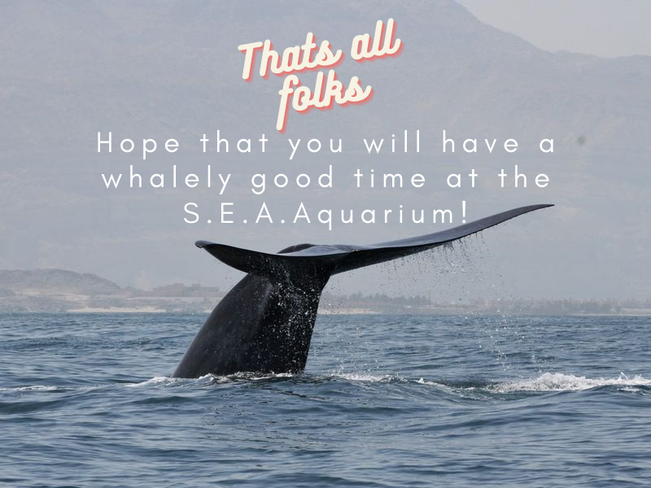
If you still feel lost like a small fish in the S.E.A Aquarium, clam down. Click here for more information and here for FAQ

 By bus: At bus stop 14141 at VivoCity or 14121 at Merrill Lynch (HarbourFront), board bus RW8 and alight at the Resorts World Sentosa.
By bus: At bus stop 14141 at VivoCity or 14121 at Merrill Lynch (HarbourFront), board bus RW8 and alight at the Resorts World Sentosa.